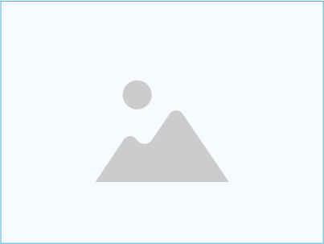

エントリーシート
イニシャル
H.I.
性別
女性
生年月日
平成 10 年10月09日（満 49 歳
性別
女性
希望勤務地
東京都・神奈川県・千葉県
学校種別
大学
学歴
2017年4月 トラスト大学トラスト学部生産学科 入学
2021年3月 トラスト大学トラスト学部生産学科 卒業
2021年3月 トラスト大学トラスト学部生産学科 卒業
職歴
2021年4月 （株）トラストグロース 入社
2022年3月 （株）トラストグロース 退社
2022年3月 （株）トラストグロース 退社
希望業種
希望職種
希望職種
化粧品・ファッション・冠婚葬祭
法人（ルート営業）・個人（ルート営業）・個人（新規開拓）
法人（ルート営業）・個人（ルート営業）・個人（新規開拓）
免許・資格
自動車運転免許
TOEIC 公開テスト 〇〇点（〇〇年〇〇月） 保育士資格（取得予定） 運転免許は第二種運転免許を持っています趣味・特技
乗馬
自己分析
主体性・努力・積極性・明るい
自己PR
就活における自己PRは誰に向けておこなうものでしょうか？そう、採用担当者＝企業ですね。では、企業の使命や目的は何だと思いますか？「社会貢献」「事業拡大」「社会の発展」……こう答える学生がほとんどです。特に「社会貢献」は非常に多い答えで、もちろん企業が担っている役割のひとつでしょう。

学生時代に
力を入れた
こと
力を入れた
こと
学生時代に力を注いだことが見つからない理由としては、そもそも大げさに考えす 学生時代に力を注いだことが見つからない理由としては、そもそも大げさに考えす 全国大会に出場するなど華々しい経験でなければアピールできないと考える人は多 いですが、実はそうではありません。学生時代に力を注いだことは、基本的にはど んな内容をアピールしてもOKです。
学業で力を
入れたこと
入れたこと
学業で力を注いだことといわれると、どのような勉強をしたかという、勉強の内容 自体に注目してしまいがちです。確かに、何を学んだかが重要視される場合もあり ます。しかし、実際は基本的には勉強内容そのものではなく、学業への取り組み方 がみられています。